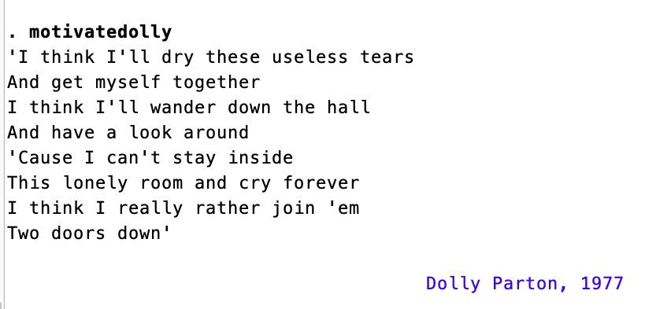

Field Photos
Jordan (2022–24)


Kenya / Tanzania (2017)


User Written Packages
Inspired by the user-written Stata package motivate, I made a Dolly Parton–themed version called motivatedolly during my pre-doc. Stata users interested in randomly generated motivational quotes and song lyrics from Dolly may find it on my GitHub or download it from SSC.

motivatedolly